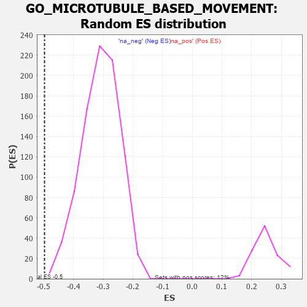

| | | Dataset | 7d |
| Phenotype | NoPhenotypeAvailable |
| Upregulated in class | na_neg |
| GeneSet | GO_MICROTUBULE_BASED_MOVEMENT |
| Enrichment Score (ES) | -0.49766833 |
| Normalized Enrichment Score (NES) | -1.6103585 |
| Nominal p-value | 0.0011337869 |
| FDR q-value | 0.08854909 |
| FWER p-Value | 1.0 |
Table: GSEA Results Summary
 Fig 1: Enrichment plot: GO_MICROTUBULE_BASED_MOVEMENT
Fig 1: Enrichment plot: GO_MICROTUBULE_BASED_MOVEMENT
Profile of the Running ES Score & Positions of GeneSet Members on the Rank Ordered List
| PROBE | GENE SYMBOL | GENE_TITLE | RANK IN GENE LIST | RANK METRIC SCORE | RUNNING ES | CORE ENRICHMENT | | 1 | KLC3 | | | 28 | 3.799 | 0.0536 | No |
| 2 | KIFC3 | | | 232 | 0.978 | 0.0425 | No |
| 3 | KLC2 | | | 238 | 0.951 | 0.0562 | No |
| 4 | KIF23 | | | 522 | 0.622 | 0.0296 | No |
| 5 | IGBP1 | | | 869 | 0.514 | -0.0066 | No |
| 6 | AP3S1 | | | 1063 | 0.471 | -0.0240 | No |
| 7 | RFX3 | | | 1171 | 0.451 | -0.0308 | No |
| 8 | STK36 | | | 1193 | 0.448 | -0.0268 | No |
| 9 | DDX4 | | | 1436 | 0.403 | -0.0515 | No |
| 10 | LCA5L | | | 1598 | 0.374 | -0.0663 | No |
| 11 | TNPO1 | | | 1684 | 0.359 | -0.0717 | No |
| 12 | TRAK1 | | | 1714 | 0.354 | -0.0700 | No |
| 13 | CENPE | | | 2086 | 0.293 | -0.1128 | No |
| 14 | WASF1 | | | 2303 | 0.259 | -0.1363 | No |
| 15 | SPG7 | | | 2525 | 0.223 | -0.1610 | No |
| 16 | ARL8B | | | 2577 | 0.216 | -0.1643 | No |
| 17 | BAG3 | | | 2620 | 0.209 | -0.1665 | No |
| 18 | TTLL1 | | | 2764 | 0.189 | -0.1818 | No |
| 19 | COPG2 | | | 2859 | 0.173 | -0.1911 | No |
| 20 | KIF4B | | | 2965 | 0.155 | -0.2021 | No |
| 21 | FEZ1 | | | 3055 | 0.142 | -0.2113 | No |
| 22 | MAP2 | | | 3074 | 0.140 | -0.2115 | No |
| 23 | KIF1A | | | 3415 | 0.088 | -0.2534 | No |
| 24 | SPAST | | | 3801 | 0.027 | -0.3019 | No |
| 25 | AP3B2 | | | 3974 | -0.002 | -0.3237 | No |
| 26 | KIF15 | | | 4106 | -0.024 | -0.3400 | No |
| 27 | OPA1 | | | 4330 | -0.065 | -0.3673 | No |
| 28 | KIF3B | | | 4450 | -0.085 | -0.3812 | No |
| 29 | RAB21 | | | 4620 | -0.122 | -0.4008 | No |
| 30 | KLC1 | | | 4697 | -0.139 | -0.4084 | No |
| 31 | TPPP2 | | | 4800 | -0.157 | -0.4190 | No |
| 32 | IFT43 | | | 4907 | -0.179 | -0.4298 | No |
| 33 | PURA | | | 5032 | -0.205 | -0.4424 | No |
| 34 | HDAC6 | | | 5183 | -0.244 | -0.4578 | No |
| 35 | ASH1L | | | 5203 | -0.248 | -0.4565 | No |
| 36 | TMF1 | | | 5225 | -0.251 | -0.4554 | No |
| 37 | KIF19 | | | 5392 | -0.294 | -0.4721 | No |
| 38 | AP3S2 | | | 5433 | -0.303 | -0.4726 | No |
| 39 | KIF3A | | | 5480 | -0.313 | -0.4737 | No |
| 40 | KIF12 | | | 5508 | -0.322 | -0.4723 | No |
| 41 | KIF2A | | | 5511 | -0.322 | -0.4677 | No |
| 42 | NDE1 | | | 5578 | -0.339 | -0.4710 | No |
| 43 | VAMP7 | | | 5777 | -0.399 | -0.4902 | Yes |
| 44 | LAMP1 | | | 5796 | -0.404 | -0.4864 | Yes |
| 45 | IFT46 | | | 5802 | -0.406 | -0.4809 | Yes |
| 46 | BBS4 | | | 5806 | -0.407 | -0.4751 | Yes |
| 47 | SUN2 | | | 5893 | -0.433 | -0.4796 | Yes |
| 48 | STK11 | | | 5922 | -0.443 | -0.4764 | Yes |
| 49 | UBB | | | 6090 | -0.503 | -0.4901 | Yes |
| 50 | FLOT2 | | | 6092 | -0.504 | -0.4826 | Yes |
| 51 | AP3M1 | | | 6100 | -0.506 | -0.4759 | Yes |
| 52 | DLG2 | | | 6126 | -0.513 | -0.4714 | Yes |
| 53 | IFT80 | | | 6135 | -0.515 | -0.4646 | Yes |
| 54 | LCA5 | | | 6213 | -0.540 | -0.4663 | Yes |
| 55 | RGN | | | 6233 | -0.547 | -0.4605 | Yes |
| 56 | CDC42 | | | 6236 | -0.548 | -0.4525 | Yes |
| 57 | AP3D1 | | | 6261 | -0.558 | -0.4471 | Yes |
| 58 | DRC1 | | | 6278 | -0.565 | -0.4407 | Yes |
| 59 | IFT52 | | | 6280 | -0.566 | -0.4323 | Yes |
| 60 | IFT57 | | | 6307 | -0.579 | -0.4269 | Yes |
| 61 | IFT88 | | | 6335 | -0.590 | -0.4214 | Yes |
| 62 | IFT27 | | | 6348 | -0.596 | -0.4140 | Yes |
| 63 | ARMC2 | | | 6363 | -0.602 | -0.4067 | Yes |
| 64 | BBS2 | | | 6383 | -0.608 | -0.3999 | Yes |
| 65 | IFT22 | | | 6400 | -0.617 | -0.3927 | Yes |
| 66 | TTLL6 | | | 6422 | -0.629 | -0.3859 | Yes |
| 67 | CELF3 | | | 6475 | -0.651 | -0.3827 | Yes |
| 68 | ZBBX | | | 6505 | -0.664 | -0.3764 | Yes |
| 69 | RPGR | | | 6579 | -0.699 | -0.3751 | Yes |
| 70 | CLN3 | | | 6580 | -0.699 | -0.3646 | Yes |
| 71 | TUB | | | 6611 | -0.718 | -0.3576 | Yes |
| 72 | TTLL9 | | | 6657 | -0.743 | -0.3522 | Yes |
| 73 | OFD1 | | | 6692 | -0.758 | -0.3451 | Yes |
| 74 | KIF27 | | | 6750 | -0.786 | -0.3405 | Yes |
| 75 | WDR19 | | | 6796 | -0.812 | -0.3340 | Yes |
| 76 | TTC29 | | | 6967 | -0.917 | -0.3418 | Yes |
| 77 | NPHP4 | | | 6991 | -0.931 | -0.3307 | Yes |
| 78 | DNHD1 | | | 7032 | -0.961 | -0.3213 | Yes |
| 79 | ARL3 | | | 7041 | -0.963 | -0.3078 | Yes |
| 80 | TTC25 | | | 7094 | -0.992 | -0.2995 | Yes |
| 81 | RAB1A | | | 7096 | -0.993 | -0.2847 | Yes |
| 82 | WDR60 | | | 7153 | -1.038 | -0.2762 | Yes |
| 83 | HYDIN | | | 7173 | -1.049 | -0.2628 | Yes |
| 84 | TEKT2 | | | 7177 | -1.053 | -0.2474 | Yes |
| 85 | KIF6 | | | 7195 | -1.066 | -0.2335 | Yes |
| 86 | IFT74 | | | 7211 | -1.085 | -0.2190 | Yes |
| 87 | WDR34 | | | 7233 | -1.103 | -0.2051 | Yes |
| 88 | KIF9 | | | 7261 | -1.135 | -0.1915 | Yes |
| 89 | RSPH9 | | | 7265 | -1.137 | -0.1747 | Yes |
| 90 | IFT81 | | | 7277 | -1.151 | -0.1588 | Yes |
| 91 | KIF17 | | | 7291 | -1.160 | -0.1430 | Yes |
| 92 | ARMC4 | | | 7311 | -1.181 | -0.1276 | Yes |
| 93 | TEKT1 | | | 7349 | -1.220 | -0.1140 | Yes |
| 94 | WDR35 | | | 7357 | -1.225 | -0.0964 | Yes |
| 95 | WDR78 | | | 7396 | -1.261 | -0.0823 | Yes |
| 96 | WDR63 | | | 7411 | -1.276 | -0.0649 | Yes |
| 97 | SPEF2 | | | 7418 | -1.289 | -0.0462 | Yes |
| 98 | TEKT4 | | | 7539 | -1.455 | -0.0396 | Yes |
| 99 | GAS8 | | | 7540 | -1.455 | -0.0177 | Yes |
| 100 | IQCG | | | 7541 | -1.455 | 0.0042 | Yes |
| 101 | TEKT3 | | | 7658 | -1.657 | 0.0144 | Yes |
| 102 | DRC7 | | | 7667 | -1.676 | 0.0386 | Yes |
Table: GSEA details [plain text format]

Fig 2: GO_MICROTUBULE_BASED_MOVEMENT: Random ES distribution
Gene set null distribution of ES for GO_MICROTUBULE_BASED_MOVEMENT